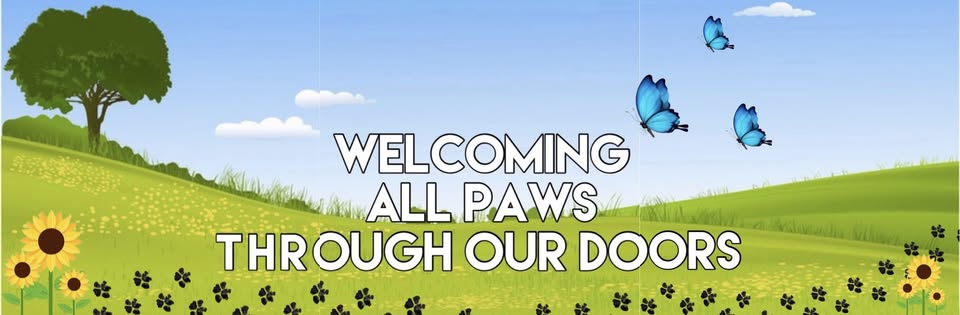

Welcoming all paws through our doors
Dog walking and pet services in Widnes, Rainhill & surrounding areas. First aid trained, insured and DBS checked. Each dog gets their own space — photos, updates and requests in one place.
What we do
We offer regular dog walking and extra services so your dog gets the attention they deserve. As a client, you'll get updates and a dedicated place to see your dog's profile, request extra walks, tell us about holidays or breaks, and stay in the loop — without chasing updates on social media.